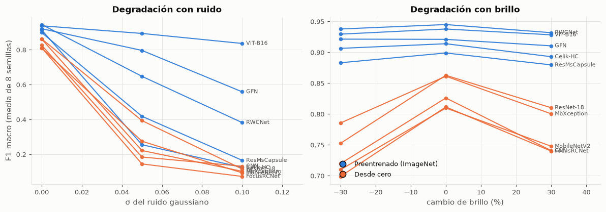
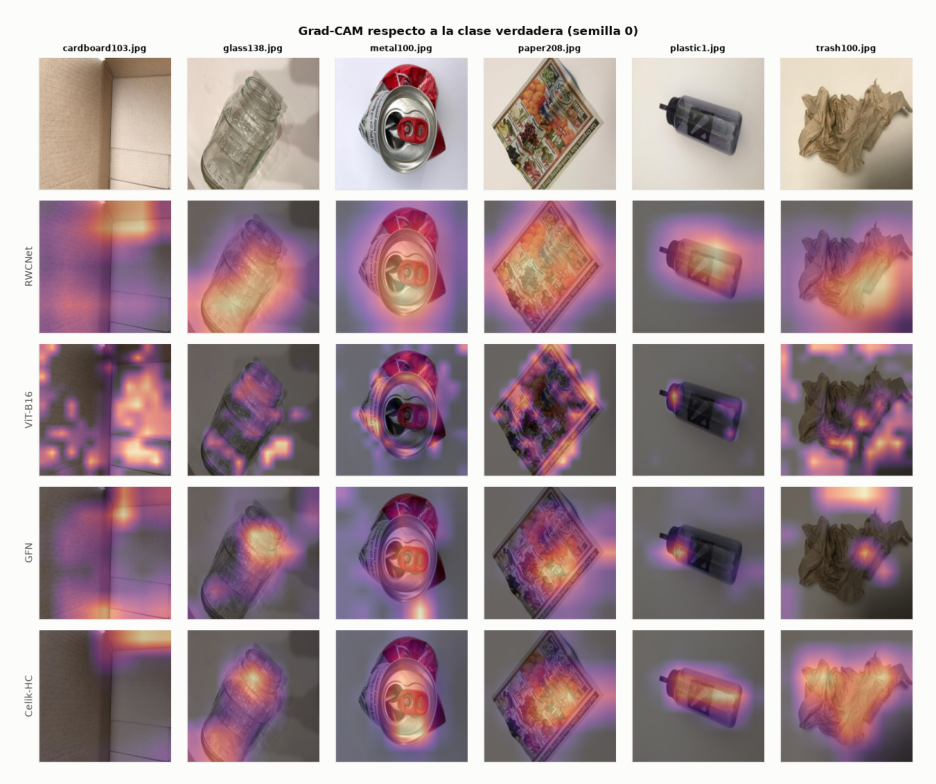
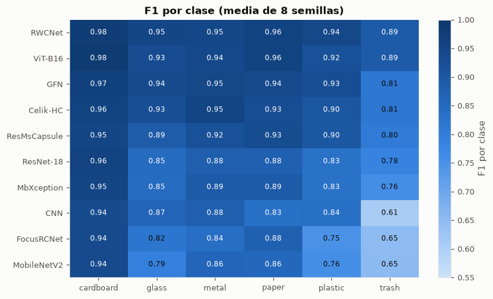
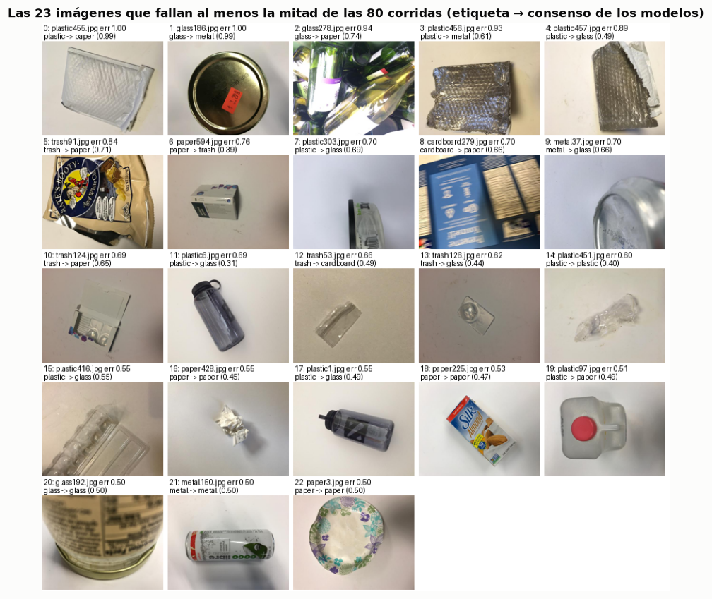
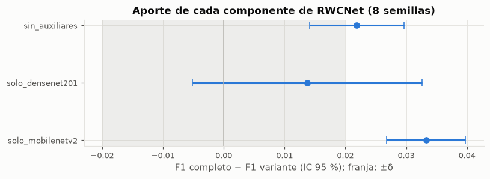

15. Robustez, interpretabilidad, errores y techo de desempeño#
En este capítulo evaluamos cómo se degradan los modelos ante perturbaciones de la imagen y ante un cambio de fondo, dónde se fija su atención, en qué imágenes fallan y cuánto margen de mejora real queda. Cerramos con la ablación del mejor modelo. Las perturbaciones, el Grad-CAM y la fracción de atención sobre el fondo están en el preregistro; el resto de los análisis es exploratorio.
15.1 Robustez ante perturbaciones y cambio de fondo#
Las perturbaciones son las del capítulo 5 y se aplican a la imagen de prueba en [0, 1], antes de normalizar, con la semilla 2026:
ruido gaussiano con \(\sigma = 0.05\) y \(0.10\);
desenfoque gaussiano;
brillo de −30 % y +30 %;
oclusión con un cuadrado gris;
sustitución del fondo blanco por texturas (cambio de distribución emulado).
El ruido y el brillo se evalúan con tres niveles de severidad, contando la imagen original, lo que permite trazar su curva de degradación. El desenfoque, la oclusión y el fondo se evalúan con el nivel fijado en el preregistro, el mismo del capítulo 5, de modo que los diez modelos se comparan en las mismas condiciones que los modelos base.
El índice de robustez es el área bajo la curva de degradación normalizada por el F1 sin perturbar. En el ruido, \(\text{IR} = \frac{1}{0.10\,F_0}\int_0^{0.10} F(\sigma)\,d\sigma\) por la regla del trapecio; vale 1 si el modelo no se degrada.
rb = pd.concat([pd.read_csv(SUM / "robustez.csv"), pd.read_csv(SUM / "robustez_modelos_base.csv")])
tab = rb.groupby(["model", "perturbacion"]).f1_macro.mean().unstack()
cols = ["limpio", "ruido_0.05", "ruido_0.10", "desenfoque", "brillo_-30", "brillo_+30", "oclusion", "fondo_sustituido"]
ri = pd.read_csv(COMP / "robustez_indice.csv").groupby("model")[["ir_ruido", "ir_brillo", "ir_global"]].mean()
display(tab.loc[orden, cols].join(ri).round(3))
| limpio | ruido_0.05 | ruido_0.10 | desenfoque | brillo_-30 | brillo_+30 | oclusion | fondo_sustituido | ir_ruido | ir_brillo | ir_global | |
|---|---|---|---|---|---|---|---|---|---|---|---|
| model | |||||||||||
| RWCNet | 0.945 | 0.648 | 0.382 | 0.805 | 0.938 | 0.932 | 0.931 | 0.901 | 0.694 | 0.995 | 0.837 |
| ViT-B16 | 0.938 | 0.894 | 0.837 | 0.871 | 0.929 | 0.928 | 0.932 | 0.919 | 0.950 | 0.995 | 0.961 |
| GFN | 0.921 | 0.797 | 0.559 | 0.764 | 0.921 | 0.911 | 0.919 | 0.894 | 0.834 | 0.997 | 0.894 |
| Celik-HC | 0.914 | 0.255 | 0.125 | 0.740 | 0.906 | 0.893 | 0.896 | 0.877 | 0.424 | 0.992 | 0.734 |
| ResMsCapsule | 0.899 | 0.419 | 0.166 | 0.543 | 0.883 | 0.880 | 0.859 | 0.822 | 0.529 | 0.990 | 0.726 |
| ResNet-18 | 0.863 | 0.394 | 0.116 | 0.608 | 0.753 | 0.810 | 0.822 | 0.606 | 0.512 | 0.953 | 0.681 |
| MbXception | 0.861 | 0.222 | 0.103 | 0.589 | 0.785 | 0.800 | 0.832 | 0.630 | 0.409 | 0.960 | 0.657 |
| CNN | 0.826 | 0.185 | 0.132 | 0.360 | 0.720 | 0.741 | 0.781 | 0.568 | 0.402 | 0.942 | 0.603 |
| FocusRCNet | 0.811 | 0.145 | 0.073 | 0.502 | 0.699 | 0.740 | 0.779 | 0.635 | 0.362 | 0.943 | 0.629 |
| MobileNetV2 | 0.810 | 0.276 | 0.094 | 0.504 | 0.710 | 0.748 | 0.764 | 0.602 | 0.450 | 0.950 | 0.653 |
fig, axes = plt.subplots(1, 2, figsize=(11, 3.9))
for m in orden:
c = FG.color_regimen(m)
y = tab.loc[m, ["limpio", "ruido_0.05", "ruido_0.10"]].to_numpy()
axes[0].plot([0, 0.05, 0.10], y, "o-", color=c, lw=1.4, ms=4, alpha=0.9)
axes[0].text(0.102, y[-1], m, fontsize=7.2, va="center", color=FG.INK2)
yb = tab.loc[m, ["brillo_-30", "limpio", "brillo_+30"]].to_numpy()
axes[1].plot([-30, 0, 30], yb, "o-", color=c, lw=1.4, ms=4, alpha=0.9)
axes[1].text(31, yb[-1], m, fontsize=7.2, va="center", color=FG.INK2)
axes[0].set_xlim(-0.005, 0.13); axes[0].set_xlabel("σ del ruido gaussiano"); axes[0].set_ylabel("F1 macro (media de 8 semillas)")
axes[1].set_xlim(-33, 44); axes[1].set_xlabel("cambio de brillo (%)")
axes[0].set_title("Degradación con ruido"); axes[1].set_title("Degradación con brillo")
FG.leyenda_regimen(axes[1], loc="lower left"); plt.tight_layout(); plt.show()

Ante perturbaciones distintas, los modelos responden de forma muy distinta:
Ruido: es la perturbación más dañina, y separa a los modelos con atención global de las arquitecturas convolucionales. ViT-B16 conserva el 95 % de su F1 con \(\sigma = 0.05\) (índice de robustez de 0.95), GFN el 87 % (0.83) y RWCNet el 69 % (0.69). Celik-HC, MbXception y FocusRCNet caen por debajo de 0.26. La sección 12.4 cuantifica esta fragilidad con IC por grupo.
Brillo y oclusión: los modelos preentrenados apenas se degradan (≤ 0.04 de F1), y los entrenados desde cero pierden entre 0.03 y 0.11, como en el capítulo 5.
Fondo sustituido: emula un cambio de distribución hacia condiciones de planta. Los preentrenados pierden 0.02 a 0.08 de F1 y los entrenados desde cero 0.18 a 0.26. El preentrenamiento reduce la dependencia del fondo blanco.
ci = pd.read_csv(COMP / "robustez_caidas_ic.csv")
display(ci.pivot(index="model", columns="perturbacion", values="caida_f1").loc[[m for m in orden if m in ci.model.unique()]].round(3))
| perturbacion | desenfoque | fondo_sustituido | ruido_0.05 | ruido_0.10 |
|---|---|---|---|---|
| model | ||||
| RWCNet | 0.140 | 0.044 | 0.297 | 0.563 |
| ViT-B16 | 0.067 | 0.019 | 0.044 | 0.101 |
| GFN | 0.157 | 0.027 | 0.124 | 0.362 |
| Celik-HC | 0.174 | 0.037 | 0.659 | 0.789 |
| ResMsCapsule | 0.356 | 0.077 | 0.480 | 0.733 |
| MbXception | 0.272 | 0.232 | 0.639 | 0.759 |
| FocusRCNet | 0.309 | 0.177 | 0.666 | 0.738 |
15.2 Interpretabilidad: Grad-CAM, fondo y estabilidad entre semillas#
El Grad-CAM (Selvaraju et al., 2017) pondera los mapas de la última capa convolucional (o la normalización previa del último bloque, en los Transformers) por el gradiente de la clase verdadera. Lo calculamos sobre 10 imágenes de prueba por clase, las mismas en todas las semillas. Medimos dos cosas:
Fracción de la energía del mapa sobre el fondo: compara cuánta energía cae en los píxeles de fondo, detectados por umbral de brillo, con la fracción del área que ocupa el fondo.
Estabilidad entre semillas: correlación de Spearman entre los mapas de la misma imagen en cada par de semillas, y solapamiento (IoU) del 20 % de píxeles con mayor activación.
fig, ax = plt.subplots(figsize=(11, 9))
ax.imshow(Image.open(COMP / "figura_gradcam_ejemplos.png")); ax.axis("off"); plt.show()

gf = pd.read_csv(SUM / "gradcam_fondo.csv").groupby("model").agg(energia_fondo=("frac_energia_fondo", "mean"),
area_fondo=("frac_area_fondo", "mean"), exceso=("exceso_fondo", "mean"))
ge = pd.read_csv(COMP / "gradcam_estabilidad.csv").groupby("model").agg(spearman=("spearman_medio", "mean"),
iou_top20=("iou_top20_medio", "mean"))
display(gf.join(ge).loc[[m for m in orden if m in gf.index]].round(3))
| energia_fondo | area_fondo | exceso | spearman | iou_top20 | |
|---|---|---|---|---|---|
| model | |||||
| RWCNet | 0.126 | 0.188 | -0.062 | 0.810 | 0.537 |
| ViT-B16 | 0.176 | 0.188 | -0.013 | 0.155 | 0.217 |
| GFN | 0.117 | 0.188 | -0.071 | 0.381 | 0.329 |
| Celik-HC | 0.094 | 0.188 | -0.094 | 0.690 | 0.513 |
| ResMsCapsule | 0.114 | 0.188 | -0.074 | 0.475 | 0.363 |
| MbXception | 0.129 | 0.188 | -0.060 | 0.755 | 0.514 |
| FocusRCNet | 0.136 | 0.188 | -0.053 | 0.550 | 0.377 |
Coherencia con el dominio. Todos los modelos concentran la atención en el objeto: la fracción de energía sobre el fondo (9 % a 18 %) es menor que la del área de fondo (19 %). Los modelos convolucionales e híbridos preentrenados (RWCNet, Celik-HC y GFN) producen mapas compactos sobre el objeto y su contorno. ViT-B16 produce mapas más dispersos (18 % de energía en el fondo) que, aun así, siguen al objeto en los ejemplos.
Estabilidad. La correlación de los mapas entre semillas separa dos grupos:
Mapas estables: RWCNet (\(\rho = 0.81\)), MbXception (0.76) y Celik-HC (0.69). Sus explicaciones dependen poco de la semilla y se pueden interpretar.
Estabilidad intermedia: FocusRCNet (0.55), ResMsCapsule (0.48) y GFN (0.38).
ViT-B16: el menos estable (\(\rho = 0.16\); IoU del 20 % superior de 0.22), a pesar de que sus predicciones son estables. Sus explicaciones por imagen no son evidencia sólida de qué región usa el modelo.
Fidelidad. Verificamos si los mapas señalan las regiones que de verdad usa el modelo con las pruebas de inserción y borrado que Petsiuk et al. (2018) propusieron para evaluar mapas de atribución: si un mapa señala lo que el modelo usa, insertar primero esos píxeles debe recuperar la predicción antes que un orden aleatorio, y borrarlos primero debe destruirla antes. Las aplicamos a las 60 imágenes de la muestra de Grad-CAM en las 8 semillas de los cuatro modelos entrenados en el portátil: RWCNet, ResMsCapsule, MbXception y FocusRCNet (entregable2/analisis/fidelidad_gradcam.py).
Inserción: partimos de una imagen neutra (la media del entrenamiento) y añadimos los píxeles en orden decreciente de activación del mapa.
Borrado: retiramos los píxeles en ese mismo orden.
En ambos casos medimos la probabilidad de la clase verdadera y calculamos el área bajo la curva frente a la fracción de píxeles. Comparamos cada curva con la de un orden aleatorio de píxeles, promediando tres órdenes por imagen.
fid = pd.read_csv(COMP / "fidelidad_gradcam.csv")
res = fid.groupby("model")[["auc_insercion_cam", "auc_insercion_azar", "auc_borrado_cam", "auc_borrado_azar"]].mean()
porsem = fid.groupby(["model", "seed"]).apply(lambda z: pd.Series({
"ins": (z.auc_insercion_cam - z.auc_insercion_azar).mean(), "bor": (z.auc_borrado_azar - z.auc_borrado_cam).mean()}))
res["semillas con inserción mejor que azar"] = porsem.groupby("model").ins.apply(lambda x: f"{int((x > 0).sum())} de 8")
res["p Wilcoxon (inserción)"] = porsem.groupby("model").ins.apply(lambda x: st.wilcoxon(x).pvalue)
res["imágenes con inserción mejor que azar"] = fid.assign(ok=fid.auc_insercion_cam > fid.auc_insercion_azar).groupby("model").ok.mean()
display(res.loc[[m for m in ["RWCNet", "ResMsCapsule", "MbXception", "FocusRCNet"]]].round(3))
| auc_insercion_cam | auc_insercion_azar | auc_borrado_cam | auc_borrado_azar | semillas con inserción mejor que azar | p Wilcoxon (inserción) | imágenes con inserción mejor que azar | |
|---|---|---|---|---|---|---|---|
| model | |||||||
| RWCNet | 0.784 | 0.358 | 0.484 | 0.321 | 8 de 8 | 0.008 | 0.883 |
| ResMsCapsule | 0.449 | 0.256 | 0.318 | 0.210 | 8 de 8 | 0.008 | 0.810 |
| MbXception | 0.519 | 0.265 | 0.327 | 0.201 | 8 de 8 | 0.008 | 0.800 |
| FocusRCNet | 0.442 | 0.261 | 0.344 | 0.197 | 8 de 8 | 0.008 | 0.738 |
La prueba de inserción respalda la fidelidad de los mapas en los cuatro modelos. Insertar primero los píxeles que el Grad-CAM marca como importantes recupera la probabilidad de la clase verdadera mucho más rápido que un orden aleatorio. RWCNet presenta la mayor diferencia: el área bajo la curva es 0.78 con el mapa frente a 0.36 al azar. El resultado se repite en las 8 semillas de cada modelo (Wilcoxon \(p = 0.008\), el mínimo posible con 8 semillas) y en el 74 % al 88 % de las imágenes. Los mapas señalan regiones que el modelo efectivamente usa para clasificar.
La prueba de borrado da el resultado opuesto, y su causa es interpretable. Retirar píxeles dispersos al azar reduce la probabilidad más rápido que retirar la región del mapa. El área bajo la curva es 0.20 a 0.32 al azar, frente a 0.32 a 0.48 con el mapa. Un borrado aleatorio de píxeles equivale a ruido impulsivo sobre toda la imagen, y la sección 15.1 muestra que estas arquitecturas convolucionales colapsan ante ruido disperso. En estos modelos, el borrado aleatorio mide sobre todo esa fragilidad y no la importancia de las regiones, por lo que la inserción es la prueba informativa. La misma lectura refuerza la limitación del paper guía: la decisión de estas redes depende más de la integridad de la textura en toda la imagen que de una región concreta.
La prueba usa los pesos guardados de las corridas del portátil. Los modelos entrenados en Colab (ViT-B16, GFN y Celik-HC) se interpretan con la estabilidad entre semillas y la fracción de atención sobre el fondo de esta misma sección.
15.3 Análisis de errores#
fc = pd.read_csv(SUM / "f1_por_clase.csv")
fcb = []
from comun import run_dir, load_pickle
for m in ["CNN", "MobileNetV2", "ResNet-18"]:
for s in SEEDS:
mt = load_pickle(run_dir(m, s) / "metrics_test.pkl")
for c in CLASSES:
fcb.append({"model": m, "seed": s, "clase": c, "f1": mt["f1_per_class"][c]})
fc = pd.concat([fc, pd.DataFrame(fcb)])
hm = fc.groupby(["model", "clase"]).f1.mean().unstack().loc[orden, CLASSES]
fig, ax = plt.subplots(figsize=(7.5, 4.6))
from matplotlib.colors import LinearSegmentedColormap
cmap = LinearSegmentedColormap.from_list("seq", FG.SEQ)
im = ax.imshow(hm.to_numpy(), cmap=cmap, vmin=0.55, vmax=1.0, aspect="auto")
for i in range(hm.shape[0]):
for j in range(hm.shape[1]):
v = hm.iat[i, j]
ax.text(j, i, f"{v:.2f}", ha="center", va="center", fontsize=8, color="white" if v > 0.82 else FG.INK)
ax.set_xticks(range(6), CLASSES); ax.set_yticks(range(len(orden)), orden); ax.grid(False)
plt.colorbar(im, ax=ax, fraction=0.04, label="F1 por clase")
ax.set_title("F1 por clase (media de 8 semillas)"); plt.tight_layout(); plt.show()

Desempeño por clase.
trash: la clase más difícil en los diez modelos (F1 entre 0.61 y 0.89), con solo 19 imágenes de prueba.plasticyglass: las siguientes en dificultad, por las confusiones entre materiales transparentes.cardboard: la más fácil en todos los modelos (0.94 a 0.98).
La ventaja de los mejores modelos sobre el de referencia se concentra en trash, plastic y glass, las clases donde el preentrenamiento aporta rasgos de material que no se aprenden con unas 2500 imágenes.
ec = pd.read_csv(COMP / "errores_compartidos.csv")
M = pd.DataFrame(np.eye(len(MODELS)), index=MODELS, columns=MODELS)
for r in ec.itertuples():
M.loc[r.A, r.B] = M.loc[r.B, r.A] = r.corr_errores
display(M.loc[orden, orden].round(2))
ens = pd.read_csv(COMP / "ensambles.csv").groupby("ensamble").f1_macro.agg(["mean", "std"])
display(ens.round(4))
ei = pd.read_csv(COMP / "errores_por_imagen.csv")
print(f"Imágenes que fallan al menos la mitad de las 80 corridas: {(ei.tasa_error_80 >= 0.5).sum()}; "
f"al menos el 75 %: {(ei.tasa_error_80 >= 0.75).sum()}; ninguna corrida: {(ei.tasa_error_80 == 0).sum()} de 361")
| RWCNet | ViT-B16 | GFN | Celik-HC | ResMsCapsule | ResNet-18 | MbXception | CNN | FocusRCNet | MobileNetV2 | |
|---|---|---|---|---|---|---|---|---|---|---|
| RWCNet | 1.00 | 0.41 | 0.51 | 0.45 | 0.44 | 0.32 | 0.33 | 0.32 | 0.29 | 0.31 |
| ViT-B16 | 0.41 | 1.00 | 0.40 | 0.36 | 0.31 | 0.25 | 0.25 | 0.26 | 0.26 | 0.27 |
| GFN | 0.51 | 0.40 | 1.00 | 0.47 | 0.36 | 0.32 | 0.28 | 0.27 | 0.30 | 0.30 |
| Celik-HC | 0.45 | 0.36 | 0.47 | 1.00 | 0.39 | 0.28 | 0.28 | 0.29 | 0.33 | 0.34 |
| ResMsCapsule | 0.44 | 0.31 | 0.36 | 0.39 | 1.00 | 0.37 | 0.31 | 0.31 | 0.30 | 0.33 |
| ResNet-18 | 0.32 | 0.25 | 0.32 | 0.28 | 0.37 | 1.00 | 0.58 | 0.43 | 0.49 | 0.51 |
| MbXception | 0.33 | 0.25 | 0.28 | 0.28 | 0.31 | 0.58 | 1.00 | 0.39 | 0.52 | 0.51 |
| CNN | 0.32 | 0.26 | 0.27 | 0.29 | 0.31 | 0.43 | 0.39 | 1.00 | 0.37 | 0.38 |
| FocusRCNet | 0.29 | 0.26 | 0.30 | 0.33 | 0.30 | 0.49 | 0.52 | 0.37 | 1.00 | 0.51 |
| MobileNetV2 | 0.31 | 0.27 | 0.30 | 0.34 | 0.33 | 0.51 | 0.51 | 0.38 | 0.51 | 1.00 |
| mean | std | |
|---|---|---|
| ensamble | ||
| 10 modelos | 0.943 | 0.004 |
| RWCNet+ViT-B16+GFN | 0.951 | 0.009 |
| oráculo (alguno acierta) | 0.991 | 0.004 |
Imágenes que fallan al menos la mitad de las 80 corridas: 23; al menos el 75 %: 7; ninguna corrida: 165 de 361
Errores compartidos y complementariedad.
Correlación de errores: la correlación entre los indicadores de error de dos modelos en la misma semilla va de 0.25 a 0.58. Es mayor entre los modelos entrenados desde cero (0.58 entre MbXception y ResNet-18) y menor entre ViT-B16 y las CNN (alrededor de 0.25): el Transformer se equivoca en imágenes distintas.
Ensambles: promediar las probabilidades de RWCNet, ViT-B16 y GFN da un F1 de 0.951, apenas superior al de RWCNet solo (0.945). El ensamble de los diez modelos (0.943) no lo mejora. Un oráculo que acierta si algún modelo acierta llega a 0.99 de accuracy: hay complementariedad, pero el voto no la aprovecha.
Imágenes difíciles: 23 imágenes fallan en al menos la mitad de las 80 corridas y solo 7 en al menos el 75 %. La dificultad se concentra en pocos casos.
Taxonomía de los casos difíciles. Definimos cinco categorías mutuamente excluyentes y clasificamos por inspección visual las 23 imágenes que fallan en al menos la mitad de las corridas:
(a) posible error de etiqueta;
(b) material mixto o compuesto;
(c) transparencia o reflejo que confunde plástico, vidrio y metal;
(d) encuadre, fondo o escena atípicos;
(e) otro.
Primero clasificamos los errores sistemáticos, los que se repiten entre modelos y semillas; después extendemos la taxonomía a todos los errores del mejor modelo.
tax = {"plastic/plastic455.jpg": "b", "glass/glass186.jpg": "a", "glass/glass278.jpg": "d", "plastic/plastic456.jpg": "b",
"plastic/plastic457.jpg": "b", "trash/trash91.jpg": "b", "paper/paper594.jpg": "d", "plastic/plastic303.jpg": "c",
"cardboard/cardboard279.jpg": "d", "metal/metal37.jpg": "c", "trash/trash124.jpg": "b", "plastic/plastic6.jpg": "c",
"trash/trash53.jpg": "c", "trash/trash126.jpg": "c", "plastic/plastic451.jpg": "c", "plastic/plastic416.jpg": "c",
"paper/paper428.jpg": "d", "plastic/plastic1.jpg": "c", "paper/paper225.jpg": "b", "plastic/plastic97.jpg": "c",
"glass/glass192.jpg": "d", "metal/metal150.jpg": "e", "paper/paper3.jpg": "b"}
nombres = {"a": "posible error de etiqueta", "b": "material mixto o compuesto", "c": "transparencia o reflejo",
"d": "encuadre, fondo o escena atípicos", "e": "otro"}
dif = ei[ei.tasa_error_80 >= 0.5].copy(); dif["categoría"] = dif.relpath.map(tax).map(nombres)
cnt = dif["categoría"].value_counts()
n = len(dif)
res = pd.DataFrame({"casos": cnt, "proporción": cnt / n})
res["IC 95 % (Wilson)"] = [f"[{l:.2f}, {h:.2f}]" for l, h in
[st.binomtest(int(k), n).proportion_ci(method="wilson") for k in cnt]]
display(res)
display(dif[["relpath", "clase", "consenso", "tasa_error_80", "categoría"]].reset_index(drop=True))
fig, ax = plt.subplots(figsize=(11, 9.5))
ax.imshow(Image.open(COMP / "_imagenes_dificiles.png")); ax.axis("off")
ax.set_title("Las 23 imágenes que fallan al menos la mitad de las 80 corridas (etiqueta → consenso de los modelos)")
plt.show()
| casos | proporción | IC 95 % (Wilson) | |
|---|---|---|---|
| categoría | |||
| transparencia o reflejo | 9 | 0.391 | [0.22, 0.59] |
| material mixto o compuesto | 7 | 0.304 | [0.16, 0.51] |
| encuadre, fondo o escena atípicos | 5 | 0.217 | [0.10, 0.42] |
| posible error de etiqueta | 1 | 0.043 | [0.01, 0.21] |
| otro | 1 | 0.043 | [0.01, 0.21] |
| relpath | clase | consenso | tasa_error_80 | categoría | |
|---|---|---|---|---|---|
| 0 | plastic/plastic455.jpg | plastic | paper | 1.000 | material mixto o compuesto |
| 1 | glass/glass186.jpg | glass | metal | 1.000 | posible error de etiqueta |
| 2 | glass/glass278.jpg | glass | paper | 0.938 | encuadre, fondo o escena atípicos |
| 3 | plastic/plastic456.jpg | plastic | metal | 0.925 | material mixto o compuesto |
| 4 | plastic/plastic457.jpg | plastic | glass | 0.887 | material mixto o compuesto |
| 5 | trash/trash91.jpg | trash | paper | 0.838 | material mixto o compuesto |
| 6 | paper/paper594.jpg | paper | trash | 0.762 | encuadre, fondo o escena atípicos |
| 7 | plastic/plastic303.jpg | plastic | glass | 0.700 | transparencia o reflejo |
| 8 | cardboard/cardboard279.jpg | cardboard | paper | 0.700 | encuadre, fondo o escena atípicos |
| 9 | metal/metal37.jpg | metal | glass | 0.700 | transparencia o reflejo |
| 10 | trash/trash124.jpg | trash | paper | 0.688 | material mixto o compuesto |
| 11 | plastic/plastic6.jpg | plastic | glass | 0.688 | transparencia o reflejo |
| 12 | trash/trash53.jpg | trash | cardboard | 0.662 | transparencia o reflejo |
| 13 | trash/trash126.jpg | trash | glass | 0.625 | transparencia o reflejo |
| 14 | plastic/plastic451.jpg | plastic | plastic | 0.600 | transparencia o reflejo |
| 15 | plastic/plastic416.jpg | plastic | glass | 0.550 | transparencia o reflejo |
| 16 | paper/paper428.jpg | paper | paper | 0.550 | encuadre, fondo o escena atípicos |
| 17 | plastic/plastic1.jpg | plastic | glass | 0.550 | transparencia o reflejo |
| 18 | paper/paper225.jpg | paper | paper | 0.525 | material mixto o compuesto |
| 19 | plastic/plastic97.jpg | plastic | paper | 0.512 | transparencia o reflejo |
| 20 | glass/glass192.jpg | glass | glass | 0.500 | encuadre, fondo o escena atípicos |
| 21 | metal/metal150.jpg | metal | metal | 0.500 | otro |
| 22 | paper/paper3.jpg | paper | paper | 0.500 | material mixto o compuesto |

Las categorías dominantes son la transparencia o el reflejo (9 de 23) y el material mixto (7 de 23):
Transparencia o reflejo: botellas de plástico translúcido clasificadas como vidrio, o una lata reflectante clasificada como vidrio.
Material mixto: un sobre de burbujas con papel, empaques laminados con aluminio, un tetrapak.
Ambos son errores de ambigüedad del material en una fotografía RGB, no de la arquitectura. Solo un caso (glass186, una tapa metálica etiquetada como vidrio) es un error de etiqueta probable. Las clasificaciones son una revisión visual de los autores con apoyo de IA.
Taxonomía de todos los errores del mejor modelo. Aplicamos las mismas cinco categorías a los 139 errores de RWCNet en sus 8 semillas, sin restringirnos a los casos sistemáticos. Esos errores caen en 42 imágenes distintas: 20 de ellas están entre las 23 difíciles, y las otras 22 se clasificaron con el mismo criterio. Cada error cuenta una vez por semilla, y el IC 95 % se calcula con bootstrap por imagen (2000 remuestreos), porque los errores de una misma imagen en distintas semillas no son independientes.
from comun import run_dir, load_pickle
tax_extra = {"cardboard/cardboard385.jpg": "e", "plastic/plastic441.jpg": "c", "paper/paper573.jpg": "e",
"cardboard/cardboard33.jpg": "d", "plastic/plastic23.jpg": "c", "plastic/plastic302.jpg": "c",
"glass/glass468.jpg": "c", "cardboard/cardboard100.jpg": "d", "metal/metal22.jpg": "e",
"glass/glass457.jpg": "c", "cardboard/cardboard144.jpg": "b", "metal/metal362.jpg": "d",
"paper/paper160.jpg": "b", "paper/paper468.jpg": "e", "plastic/plastic173.jpg": "c",
"glass/glass28.jpg": "b", "paper/paper95.jpg": "d", "plastic/plastic111.jpg": "d",
"cardboard/cardboard218.jpg": "b", "metal/metal194.jpg": "c", "plastic/plastic433.jpg": "c",
"plastic/plastic468.jpg": "c"}
tax_rw = {**tax, **tax_extra}
err = []
for s in SEEDS:
d = load_pickle(run_dir("RWCNet", s) / "test_predictions.pkl")
yp = np.asarray(d["probs"]).argmax(1)
for p, a, b in zip(d["filepaths"], d["y_true"], yp):
if a != b:
err.append({"semilla": s, "relpath": "/".join(str(p).replace("\\", "/").split("/")[-2:]),
"predicción": CLASSES[b]})
err = pd.DataFrame(err)
err["cat"] = err.relpath.map(tax_rw)
assert err.cat.notna().all()
cats = list(nombres)
por_img = err.groupby("relpath").cat.agg(["first", "size"])
rng = np.random.default_rng(2026)
boot = []
for _ in range(2000):
smp = por_img.sample(len(por_img), replace=True, random_state=rng.integers(1 << 31))
tot = smp["size"].sum()
boot.append([smp.loc[smp["first"] == c, "size"].sum() / tot for c in cats])
boot = np.array(boot)
cnt_rw = err.cat.value_counts().reindex(cats, fill_value=0)
tax_tab = pd.DataFrame({"categoría": [nombres[c] for c in cats], "errores": cnt_rw.values,
"imágenes": [int((por_img["first"] == c).sum()) for c in cats],
"proporción": cnt_rw.values / len(err),
"IC 95 % (bootstrap por imagen)": [f"[{lo:.2f}, {hi:.2f}]" for lo, hi in
zip(np.percentile(boot, 2.5, 0), np.percentile(boot, 97.5, 0))]})
display(tax_tab.set_index("categoría"))
print(f"Errores de RWCNet: {len(err)} en {err.relpath.nunique()} imágenes; "
f"cubiertos por las 23 imágenes difíciles: {err.relpath.isin(dif.relpath).sum()}")
| errores | imágenes | proporción | IC 95 % (bootstrap por imagen) | |
|---|---|---|---|---|
| categoría | ||||
| posible error de etiqueta | 8 | 1 | 0.058 | [0.00, 0.18] |
| material mixto o compuesto | 39 | 10 | 0.281 | [0.12, 0.46] |
| transparencia o reflejo | 42 | 16 | 0.302 | [0.16, 0.47] |
| encuadre, fondo o escena atípicos | 34 | 10 | 0.245 | [0.10, 0.41] |
| otro | 16 | 5 | 0.115 | [0.03, 0.24] |
Errores de RWCNet: 139 en 42 imágenes; cubiertos por las 23 imágenes difíciles: 97
En RWCNet, la transparencia o el reflejo (30 % de los errores, IC [0.16, 0.47]) y el material mixto (28 %, [0.12, 0.46]) siguen siendo las categorías principales. El encuadre atípico pesa más que en los casos sistemáticos (24 %, [0.10, 0.41]): primeros planos de una cara de una caja o del interior de una lata, donde falta la forma del objeto. El único error de etiqueta probable (glass186) aporta 8 errores, uno por semilla, el 6 % del total. Más de la mitad de los errores del mejor modelo (81 de 139, las categorías b y c) son ambigüedades del material que la imagen RGB no resuelve, lo que respalda el techo de la sección 15.4.
Casos de frontera. Ordenamos las imágenes de prueba por la pérdida media de RWCNet en sus 8 semillas, y los aciertos en las 8 semillas por su confianza media.
from comun import aligned
fr = []
for s in SEEDS:
d = aligned("RWCNet", s); y = d["y_true"]; p = d["probs"]
fr.append(pd.DataFrame({"imagen": d["relpath"], "pérdida": -np.log(np.clip(p[np.arange(len(y)), y], 1e-12, 1)),
"acierto": d["y_pred"] == y, "confianza": p.max(1)}))
fr = pd.concat(fr)
mayor = fr.groupby("imagen").agg(pérdida=("pérdida", "mean"), errores=("acierto", lambda v: int((~v).sum())),
confianza=("confianza", "mean")).sort_values("pérdida", ascending=False).head(8)
mayor["categoría"] = mayor.index.map(tax_rw).map(nombres)
display(mayor.round(3))
seguros = fr.groupby("imagen").filter(lambda g: g.acierto.all()).groupby("imagen").confianza.mean().sort_values().head(8)
display(seguros.rename("confianza media (aciertos en las 8 semillas)").to_frame().round(3))
| pérdida | errores | confianza | categoría | |
|---|---|---|---|---|
| imagen | ||||
| glass/glass186.jpg | 8.654 | 8 | 0.998 | posible error de etiqueta |
| plastic/plastic455.jpg | 5.233 | 8 | 0.864 | material mixto o compuesto |
| glass/glass278.jpg | 4.279 | 8 | 0.785 | encuadre, fondo o escena atípicos |
| glass/glass192.jpg | 4.107 | 6 | 0.872 | encuadre, fondo o escena atípicos |
| plastic/plastic456.jpg | 3.215 | 7 | 0.702 | material mixto o compuesto |
| paper/paper3.jpg | 3.204 | 8 | 0.706 | material mixto o compuesto |
| paper/paper594.jpg | 2.630 | 6 | 0.879 | encuadre, fondo o escena atípicos |
| plastic/plastic303.jpg | 2.040 | 6 | 0.768 | transparencia o reflejo |
| confianza media (aciertos en las 8 semillas) | |
|---|---|
| imagen | |
| trash/trash110.jpg | 0.778 |
| plastic/plastic147.jpg | 0.814 |
| plastic/plastic392.jpg | 0.842 |
| glass/glass157.jpg | 0.856 |
| cardboard/cardboard335.jpg | 0.859 |
| paper/paper387.jpg | 0.876 |
| plastic/plastic450.jpg | 0.878 |
| metal/metal336.jpg | 0.886 |
Las 8 imágenes con mayor pérdida están entre las 23 difíciles. Encabeza glass186, el error de etiqueta probable, que RWCNet clasifica como metal con una confianza media de 0.998: el modelo acierta el material y la etiqueta es la que falla. Le siguen casos de material mixto (plastic455, plastic456, paper3) y de encuadre atípico (glass278, glass192, paper594). Entre los aciertos estables, los de menor confianza (0.78 a 0.89) son sobre todo de trash, plastic y glass, las clases que concentran los errores.
15.4 Techo de desempeño#
TrashNet no tiene una segunda anotación que permita medir el acuerdo entre anotadores. Estimamos el techo con el ruido de etiqueta inferido de la taxonomía, con dos escenarios:
Estricto: solo el error de etiqueta probable es irreducible.
Amplio: también son irreducibles los casos de material mixto, cuya etiqueta es discutible.
El techo es el F1 macro de un clasificador que acierta todas las demás imágenes y en las irreducibles predice la clase de consenso. La distancia normalizada al techo es
la fracción del margen total que queda sin cubrir.
y = aligned("RWCNet", 0)["y_true"]; rel = aligned("RWCNet", 0)["relpath"]
cons = ei.set_index("relpath").loc[rel, "consenso"].map({c: i for i, c in enumerate(CLASSES)}).to_numpy()
def techo(irreducibles):
p = y.copy(); mk = np.isin(rel, irreducibles); p[mk] = cons[mk]
return fast_f1_macro(y, p)
estricto = [r for r, c in tax.items() if c == "a"]
amplio = [r for r, c in tax.items() if c in ("a", "b")]
mejor = pd.read_csv(SUM / "f1_macro_por_semilla.csv")["RWCNet"].mean()
bases = {"baseline trivial": 0.0635, "baseline clásico": 0.7602, "ResNet-18 (cap. 7)": 0.8628}
filas = []
for nom, irr in [("estricto", estricto), ("amplio", amplio)]:
t = techo(irr)
for bn, bv in bases.items():
filas.append({"escenario": nom, "imágenes irreducibles": len(irr), "F1 techo": t, "mejor (RWCNet)": mejor,
"referencia": bn, "γ": (t - mejor) / (t - bv)})
display(pd.DataFrame(filas).round(3))
| escenario | imágenes irreducibles | F1 techo | mejor (RWCNet) | referencia | γ | |
|---|---|---|---|---|---|---|
| 0 | estricto | 1 | 0.997 | 0.945 | baseline trivial | 0.056 |
| 1 | estricto | 1 | 0.997 | 0.945 | baseline clásico | 0.221 |
| 2 | estricto | 1 | 0.997 | 0.945 | ResNet-18 (cap. 7) | 0.389 |
| 3 | amplio | 8 | 0.979 | 0.945 | baseline trivial | 0.037 |
| 4 | amplio | 8 | 0.979 | 0.945 | baseline clásico | 0.155 |
| 5 | amplio | 8 | 0.979 | 0.945 | ResNet-18 (cap. 7) | 0.292 |
El techo estimado de F1 macro está entre 0.98 y 1.00 según el escenario. El mejor modelo (0.945) cubre casi todo el margen sobre el baseline trivial (γ entre 0.04 y 0.06) y la mayor parte del margen sobre el modelo de referencia (γ entre 0.29 y 0.39 frente a ResNet-18, según el escenario). Quedan unos 3 a 5 puntos de F1 por ganar. Se concentran en las categorías de transparencia y material mixto, que un modelo RGB difícilmente resuelve: mejorar mucho más exigiría otra información, como otra modalidad o varias vistas. Esta estimación supone que las categorías asignadas son correctas y es una cota informal.
Reevaluación con la etiqueta corregida. Corregimos la etiqueta del único error de etiqueta probable (glass186, de vidrio a metal) y recalculamos el F1 macro de las 80 corridas.
from comun import aligned
filas = []
for m in MODELS:
for s in SEEDS:
d = aligned(m, s)
y2 = d["y_true"].copy(); y2[d["relpath"] == "glass/glass186.jpg"] = CLASSES.index("metal")
filas.append({"modelo": m, "original": fast_f1_macro(d["y_true"], d["y_pred"]), "corregida": fast_f1_macro(y2, d["y_pred"])})
rc = pd.DataFrame(filas).groupby("modelo")[["original", "corregida"]].mean()
rc["cambio"] = rc.corregida - rc.original
rc["rango original"] = rc.original.rank(ascending=False).astype(int); rc["rango corregido"] = rc.corregida.rank(ascending=False).astype(int)
display(rc.sort_values("original", ascending=False).round(4))
| original | corregida | cambio | rango original | rango corregido | |
|---|---|---|---|---|---|
| modelo | |||||
| RWCNet | 0.945 | 0.948 | 0.003 | 1 | 1 |
| ViT-B16 | 0.938 | 0.940 | 0.003 | 2 | 2 |
| GFN | 0.921 | 0.924 | 0.003 | 3 | 3 |
| Celik-HC | 0.914 | 0.916 | 0.002 | 4 | 4 |
| ResMsCapsule | 0.899 | 0.901 | 0.003 | 5 | 5 |
| ResNet-18 | 0.863 | 0.865 | 0.003 | 6 | 6 |
| MbXception | 0.861 | 0.864 | 0.003 | 7 | 7 |
| CNN | 0.826 | 0.829 | 0.003 | 8 | 8 |
| FocusRCNet | 0.811 | 0.814 | 0.003 | 9 | 9 |
| MobileNetV2 | 0.809 | 0.812 | 0.003 | 10 | 10 |
Con la etiqueta corregida, el F1 macro de los diez modelos sube entre 0.002 y 0.003 y el orden no cambia. El ruido de etiqueta identificado no altera las conclusiones del benchmark.
15.5 Ablación del mejor modelo: RWCNet#
Aislamos tres componentes de RWCNet, con 8 semillas por variante, la misma configuración de hiperparámetros, las mismas semillas y la misma GPU (RTX 4060) que el modelo completo:
sin_auxiliares: sin las dos salidas auxiliares, con entropía cruzada simple; mide el aporte de la supervisión profunda.
solo_densenet201: sin la rama MobileNetV2; las salidas auxiliares y el clasificador usan solo los rasgos de DenseNet201.
solo_mobilenetv2: sin la rama DenseNet201, con la misma estructura sobre los rasgos de MobileNetV2.
La diferencia es modelo completo − variante. Las 3 comparaciones forman una familia con corrección de Holm, separada de la del paper guía. La ablación no figura en el preregistro y se declara exploratoria. El preentrenamiento, el cuarto componente candidato, se aisló en el paper guía (capítulo 12), que comparte con RWCNet la estructura de dos CNN preentrenadas fusionadas.
ab = pd.read_csv(COMP / "equivalencia_ablacion.csv")
ab_rw = ab[ab.base == "RWCNet"]
display(ab_rw[["variante", "f1_variante", "f1_de", "f1_completo", "dif_media", "ic_t_lo", "ic_t_hi", "d_z", "p_t",
"p_wilcoxon", "p_t_holm_familia", "p_tost", "decision"]].set_index("variante").round(4))
fig, ax = plt.subplots(figsize=(7.5, 2.8))
for k, r in enumerate(ab_rw.itertuples()):
ax.errorbar(r.dif_media, k, xerr=[[r.dif_media - r.ic_t_lo], [r.ic_t_hi - r.dif_media]], fmt="o", color=FG.SERIES[0], capsize=4)
ax.axvline(0, color=FG.NEUTRAL, lw=1); ax.axvspan(-0.02, 0.02, color=FG.NEUTRAL, alpha=0.2, lw=0)
ax.set_yticks(range(len(ab_rw)), [v.split("/")[1] for v in ab_rw.variante]); ax.invert_yaxis()
ax.set_xlabel("F1 completo − F1 variante (IC 95 %); franja: ±δ")
ax.set_title("Aporte de cada componente de RWCNet (8 semillas)")
plt.tight_layout(); plt.show()
| f1_variante | f1_de | f1_completo | dif_media | ic_t_lo | ic_t_hi | d_z | p_t | p_wilcoxon | p_t_holm_familia | p_tost | decision | |
|---|---|---|---|---|---|---|---|---|---|---|---|---|
| variante | ||||||||||||
| RWCNet/sin_auxiliares | 0.923 | 0.015 | 0.945 | 0.022 | 0.014 | 0.030 | 2.358 | 3.000e-04 | 0.008 | 6.000e-04 | 0.706 | significativa y relevante |
| RWCNet/solo_densenet201 | 0.931 | 0.013 | 0.945 | 0.014 | -0.005 | 0.033 | 0.606 | 1.301e-01 | 0.195 | 1.301e-01 | 0.228 | no concluyente |
| RWCNet/solo_mobilenetv2 | 0.912 | 0.009 | 0.945 | 0.033 | 0.027 | 0.040 | 4.279 | 0.000e+00 | 0.008 | 0.000e+00 | 0.999 | significativa y relevante |

Dos de los tres componentes aportan de forma significativa y relevante:
Rama DenseNet201: es el componente que más aporta. Sin ella, el F1 baja a 0.912, una diferencia de 0.033 (IC 95 % [0.027, 0.040]; \(d_z = 4.3\); \(p\) Holm < 0.001; Wilcoxon \(p = 0.008\), con las 8 diferencias del mismo signo).
Supervisión profunda: sin las salidas auxiliares, el F1 baja a 0.923, una diferencia de 0.022 (IC [0.014, 0.030]; \(d_z = 2.4\); \(p\) Holm < 0.001; Wilcoxon \(p = 0.008\)). Es apenas mayor que \(\delta\), en el límite del margen.
Rama MobileNetV2: sin ella, el F1 baja a 0.931 (diferencia de 0.014, IC [−0.005, 0.033]; \(p\) Holm = 0.13). El resultado es no concluyente: no es significativo y tampoco es equivalente dentro de \(\pm\delta\) (TOST \(p = 0.23\)).
La ventaja de RWCNet sobre los demás modelos preentrenados se apoya en dos componentes: la rama DenseNet201, la más profunda, y la supervisión de sus etapas intermedias. Sin cualquiera de ellos, RWCNet queda al nivel de GFN (0.921) o por debajo, y pierde su ventaja sobre ViT-B16 (0.938). La rama MobileNetV2 añade 2.2 M parámetros y 0.30 GMAC, apenas un 7 % del costo de operaciones, con un aporte que este experimento no distingue de cero.
El contraste con el paper guía es informativo. En Celik-HC, la segunda red y la fusión multinivel no aportan, y un único extractor preentrenado rinde igual que el modelo completo. En RWCNet, el extractor principal y la supervisión profunda sí aportan, y la segunda red, la más liviana, no muestra un aporte significativo. En ambos modelos, el valor está en el extractor preentrenado principal y en cómo se entrena, más que en combinar dos redes. Este resultado respalda la valoración alta de la supervisión profunda en la tabla de mecanismos (sección 10.8).
Robustez de las variantes. Las corridas de ablación pasan por la misma evaluación de robustez que el modelo completo. Comparamos la caída de F1 con ruido gaussiano \(\sigma = 0.05\), la limitación que orienta la etapa siguiente.
from comun import run_dir, load_pickle
def caida_ruido(nombre):
out = []
for s in SEEDS:
r = load_pickle(run_dir(nombre, s) / "robustness.pkl")["results"]
out.append((r["limpio"]["f1_macro"], r["ruido_0.05"]["f1_macro"]))
return np.array(out)
base_r = caida_ruido("RWCNet")
filas = [{"variante": "RWCNet (completo)", "F1 limpio": base_r[:, 0].mean(), "F1 con ruido 0.05": base_r[:, 1].mean(),
"caída": (base_r[:, 0] - base_r[:, 1]).mean(), "diferencia de caída frente al completo": 0.0, "p (t pareada)": np.nan}]
for v in ["RWCNet/sin_auxiliares", "RWCNet/solo_densenet201", "RWCNet/solo_mobilenetv2"]:
x = caida_ruido(v)
dif = (x[:, 0] - x[:, 1]) - (base_r[:, 0] - base_r[:, 1])
filas.append({"variante": v, "F1 limpio": x[:, 0].mean(), "F1 con ruido 0.05": x[:, 1].mean(), "caída": (x[:, 0] - x[:, 1]).mean(),
"diferencia de caída frente al completo": dif.mean(), "p (t pareada)": st.ttest_1samp(dif, 0).pvalue})
display(pd.DataFrame(filas).set_index("variante").round(4))
| F1 limpio | F1 con ruido 0.05 | caída | diferencia de caída frente al completo | p (t pareada) | |
|---|---|---|---|---|---|
| variante | |||||
| RWCNet (completo) | 0.945 | 0.648 | 0.297 | 0.000 | NaN |
| RWCNet/sin_auxiliares | 0.923 | 0.631 | 0.293 | -0.005 | 0.858 |
| RWCNet/solo_densenet201 | 0.931 | 0.611 | 0.321 | 0.024 | 0.542 |
| RWCNet/solo_mobilenetv2 | 0.912 | 0.666 | 0.246 | -0.051 | 0.057 |
Ninguna variante cambia de forma significativa la caída de F1 con ruido gaussiano (de 0.25 a 0.32, frente a 0.30 del modelo completo; \(p \geq 0.057\)). La fragilidad ante el ruido no depende de la supervisión profunda ni de una rama concreta: es compartida por los dos extractores convolucionales, como en el resto de la familia (sección 12.4).